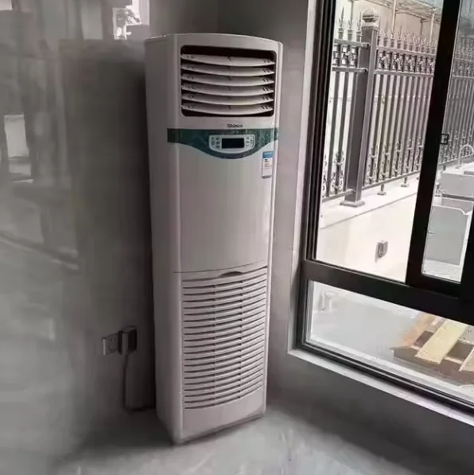
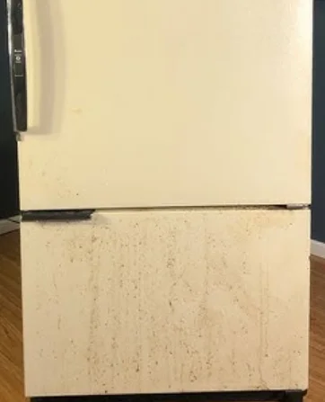
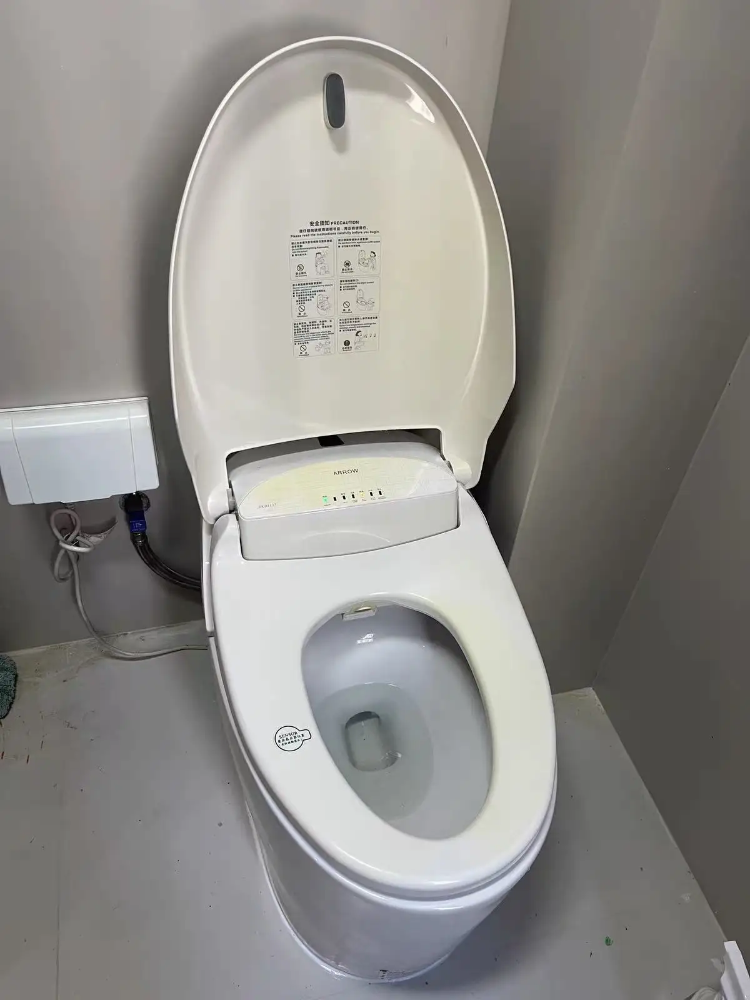
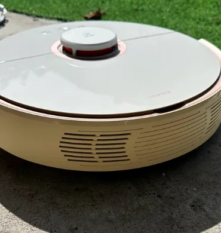

White Again, Step by Step
Everything you need for the best possible result — which method to use, exactly how to apply it, and what to do if something doesn't look right.
What you'll need
Most of this is already in your kitchen.
Which method do I need?
Look at your item and pick one. When in doubt, start with the Quick Method — you can always move on to the Wrap.
Light, recent yellowing
A light cream or yellow tint — switches, remotes, a lamp base, small parts. Results in hours.
Deep, 10+ year yellowing
That strong yellow-brown cast on AC units, fridges, toilet seats and old appliances. This is where the dramatic before & afters come from.
⚠️ Safety first
- Wear gloves and keep the spray away from your eyes. If it gets in your eyes or on your skin, rinse with plenty of clean water. If irritation continues, contact a doctor.
- Unplug appliances before treating them, and don't spray into vents, buttons, screens or openings — spray onto the surface or onto a paper towel instead.
- Test a small hidden spot first. OxiRenew is for white and light-colored plastics that yellowed from age, sun and heat. It is not for painted surfaces, printed logos/labels, fabrics, wood or colored plastic.
- Never mix with bleach, ammonia or other cleaners.
- Use in a ventilated room. Keep away from children and pets. Store upright, capped, in a cool place out of direct sun.
The Quick Method
For light yellowing · about 1–2 hours
Clean and dry the surface
Wipe off dust and grease with mild soapy water, then dry. OxiRenew works on the plastic itself — dirt only gets in its way.
Spray an even coat
Shake well and spray from about 15 cm (6 in) away so the whole yellowed area is evenly wet. Cover the full panel, not just the worst spot, so you don't get patches.
Let it work — keep it wet
Leave it for 1–2 hours. If it starts to dry, spray again. The formula only works while it's wet.
Wipe, rinse and reveal
Wipe off with a damp cloth, go over once more with clean water, and dry. Still a little yellow? Repeat, or switch to the Wrap Method.
The 3-Day Wrap Method
For deep yellowing · 5 minutes of work, 2–3 days of waiting
Unplug, clean and dry
Unplug the appliance. Wash the area with mild soapy water and let it dry completely.
Spray generously
Shake well and give the whole yellowed panel a generous, even coat.
Cover with a damp paper towel
Lay paper towels or wet wipes flat over the sprayed area. On upright surfaces like an AC unit or fridge door, this is what keeps the formula in contact with the plastic instead of running down.
Spray again over the towel
Spray the towel until it's fully soaked and lies flat against the surface — no dry spots, no air bubbles.
Wrap it tight and seal
Cover everything with cling film, pressing it flat, and overlap the edges. Seal the edges with painter's tape if you have some. A tight seal stops it from drying out — this is the most important step.
Wait 2–3 days
Leave it alone at room temperature. Normal daylight in the room helps, but avoid hot, direct sun on the wrap.
Unwrap, wipe and rinse
Peel off the film and towels, wipe the area with a damp cloth, then once more with clean water, and dry.
Very old yellowing? Do a second round
Decades-old yellowing sometimes needs two rounds. Repeat steps 2–7 — each round lifts more of the yellow.
Pro tips for the best result
Troubleshooting
The result is patchy.
The coat or the towel wasn't even. Do another round over the whole panel, making sure the towel is fully soaked and flat.
It dried out under the wrap.
The wrap wasn't sealed. Re-spray, re-wrap tightly, seal the edges with tape, and give it another 2–3 days.
It got whiter, but not all the way.
Very old yellowing often needs a second round. That's normal — each round lifts more.
Nothing changed at all.
The color may not be age-yellowing — it could be paint, dye, or colored plastic. Write to us (below) with a photo of the item and we'll help you figure it out.
Real results from customers
Before and after, photographed by customers who used this formula.








Need help? Real people are here.
Not sure which method to use, or not happy with your result? Click “Need help?” at the bottom of any page on oxirenew.com and write to us — we reply by email, usually within a few hours.
And remember: if you don't see the white come back, you're covered by our 90-day money-back guarantee.
⬇ Download this guide (PDF)© OxiRenew · oxirenew.com